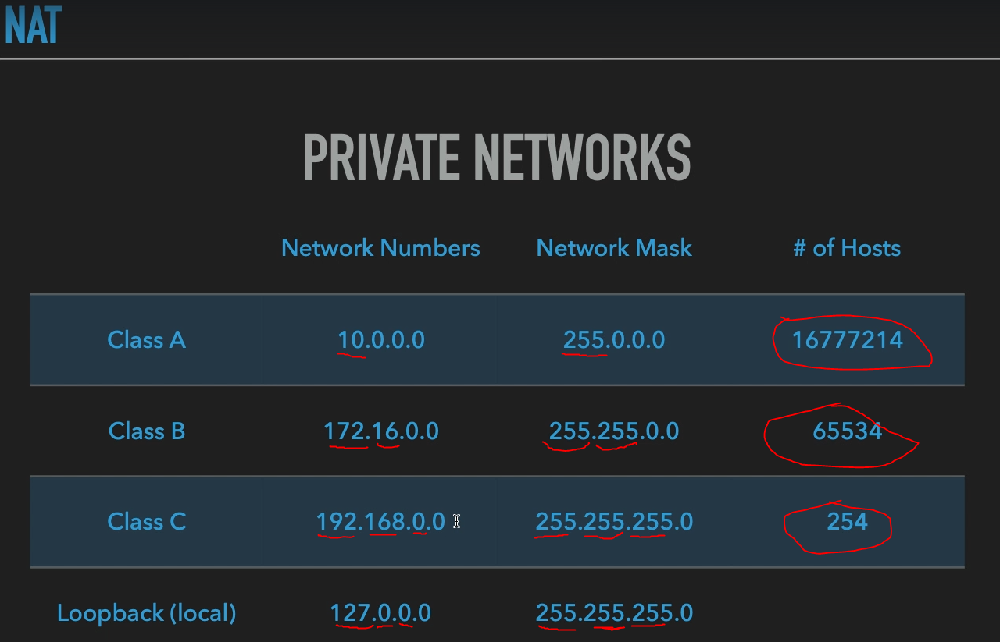
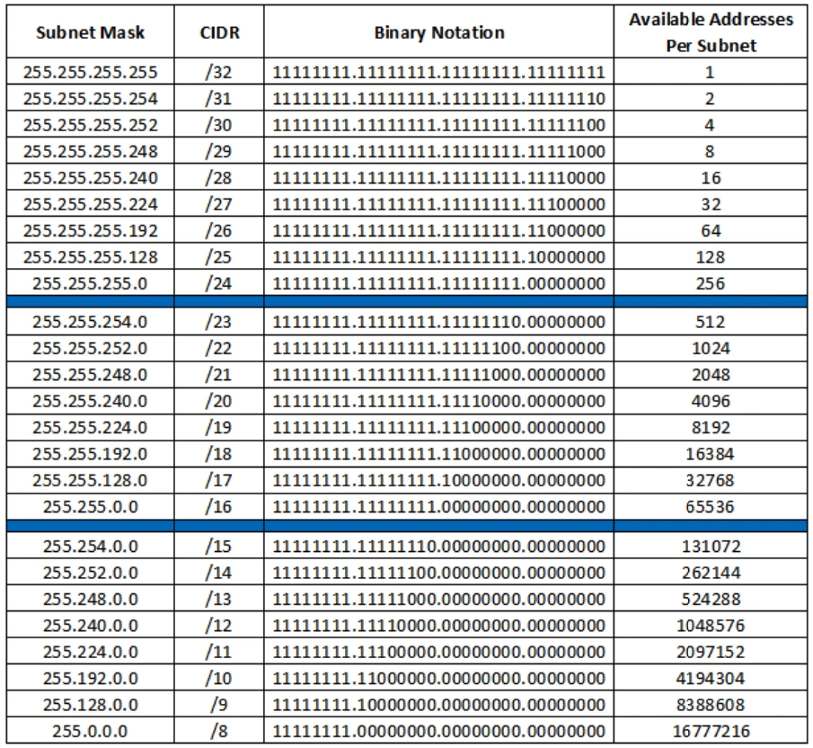
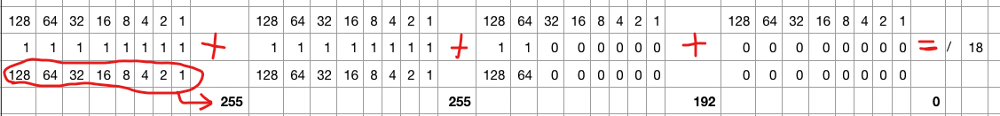

subnetmask - subnet - network mask (Alt ağ maskes
i)
subnetmask cihazların aynı ağda olup olmadıklarını belirlemeye yarayan alt ağ adresidir.
ayrıntılı açıklama:
subnetmask - subnet - network mask (Alt ağ maskes
i)
TCP/IP'de iki cihaz aynı ağda olup olmadıklarını birbirlerinin IP adreslerinin ilk birkaç basamağına bakarak anlarlar. Bu basamağa IP maskesi veya Alt ağ maskesi denir. Örneğin IP maskesi 255.255.255.0 ise, ilk üç basamağı aynı olan iki makine aynı ağda demektir.

Aslında networkmask yani subnet adreslerinde 255 olan kısımları bloklamış oluyoruz yani o kısımlar değişemiyor. Buna örnek olarak mesela Class C de “255.255.255.0” olarak ilk üç 8 bit'i de bloklamış olduk ve o yüzden geriye sadece 254 tane host kalmış oldu.
Host Table:

CIDR Calculation
